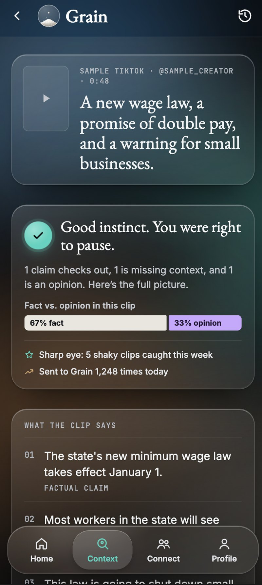
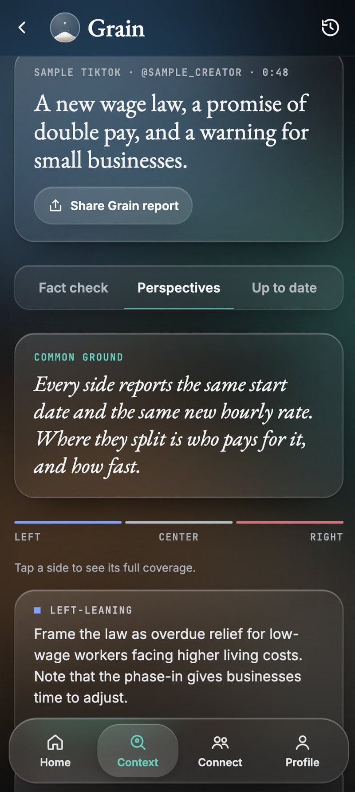
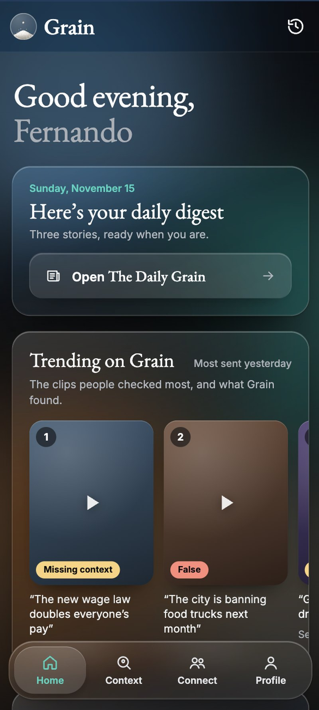
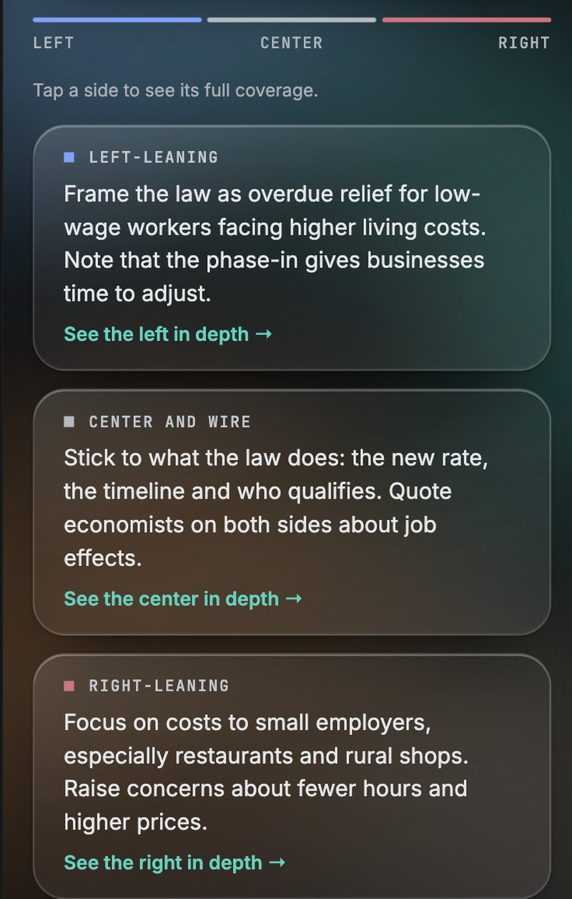
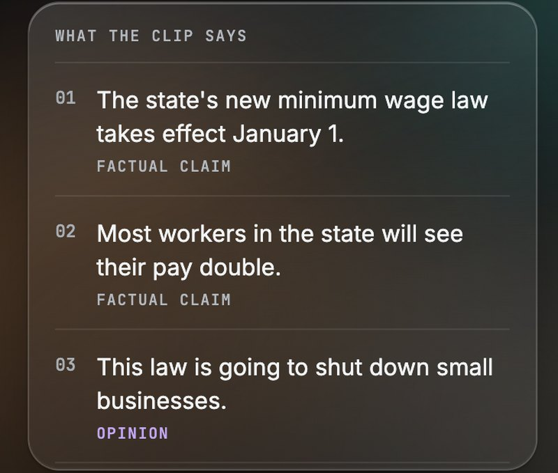
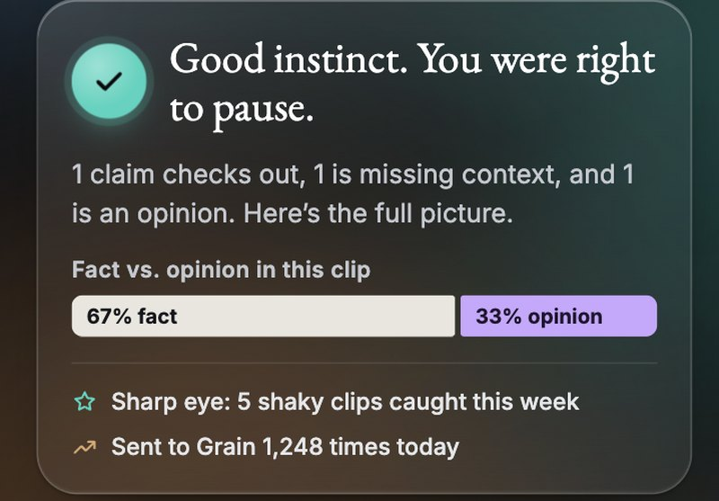
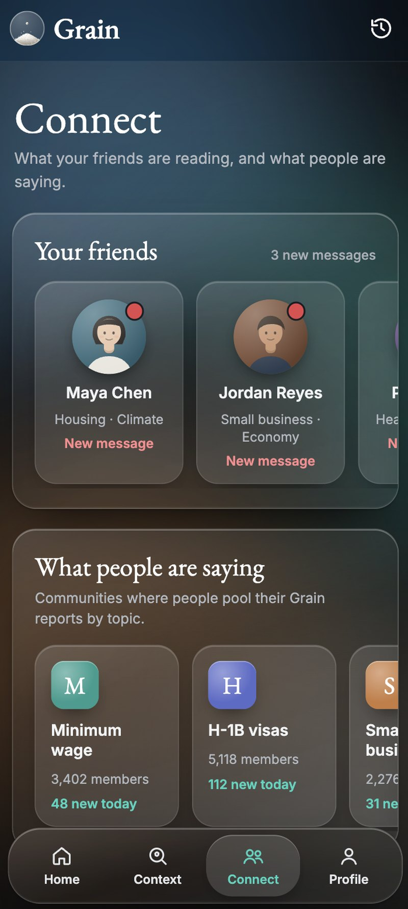

Case study · Team project · Fall 2026
Grain: context on a short video, without leaving the app
When a clip feels off, checking it means leaving the app and sorting through results you may not trust. With my team, I interviewed 10 people about that moment. Then I led the design of Grain, an AI-powered plugin that shows a clip's claims, the sides, and the sources right where you're watching.



TL;DR
Short videos strip out context, and checking one means leaving the app, so most people don't. Grain gives you a clip's claims, the perspectives on it, and the sources behind each one without leaving the app. We interviewed 10 people, mapped the user journey, and wrote the product requirements as a team; I led the prototype and took it through about 80 versions with Claude Design.
The problem
Short clips strip out context. To check one, you have to leave the app, write a search, and compare sources. Most people either never start or give up partway.
"A clip feels off. I either scroll past, or I leave TikTok, search Google or ChatGPT, open a few results, and still don't know which one to trust. It takes minutes, so I usually don't."
A composite user voice my team wrote from our interviews, not a direct quote.
Mapping the user journey showed two places where people drop off:
- Deciding to verify at all. Leaving the app often costs more than a passing doubt is worth.
- Deciding which result to trust, and when you've checked enough.
Research
We conducted 10 interviews: 6 college students and 4 working adults. They fell into two groups:
- Skeptical verifiers (6). They already leave the app to check, find it slow, distrust what they find, and build multi-step routines around it.
- Passive scrollers (4). They take clips at face value and keep scrolling.
- 10 of 10noticed bias in their feed. 6 were openly frustrated by it.
- 6 of 10have a verification habit, and every one of them leaves the app to do it.
- Sources or nothingSeveral won't trust an AI answer without seeing its sources.
- Built inTwo said a tool inside the app would be easier.
- Counter-evidenceFor a simple yes-or-no question, one person said Google is already fast enough. Another distrusts plug-ins in general.
- CaveatThe sample is small and mostly US college students.
Across the interviews, a few themes kept coming up. People want to see where an answer came from before they trust it. Many feel balanced sources are hard to find, and often agree with neither side. Some word their searches carefully so the answer doesn't just mirror their own bias. And trust in a tool is fragile: if it gets something wrong, people stop using it.
Key insight
People do doubt what they see. But the doubt lasts seconds, and checking costs minutes: leave the app, search, then figure out which answer to trust. And they don't want a verdict. They want to see the sides and the sources, and decide for themselves.
That's why we made Perspectives the core of Grain, ahead of a straight fact check.
From insight to design
The concept: share a clip to Grain, see the claims it makes, then pick a service: Fact Check, Perspectives, or Stay Up to Date. Here's how what we heard turned into what I designed.
What we heard
People often agree with neither side, and want to judge for themselves.
People told us balanced coverage is hard to find, and that they often land somewhere between the sides.
What I designed
Perspectives opens with the common ground, then lets you switch between left, center and right. Each side has its own short summary and its own sources, so you compare them yourself.

What we heard
Don't tell me what to think.
People want the facts checked, but not their opinions graded.
What I designed
Every claim is labeled as a factual claim or an opinion, and a fact vs. opinion meter shows the mix in the clip. Grain gives a verdict on factual claims only. It never calls an opinion true or false.

What our advisor said
Doubt is the trigger, so reward it.
This reframed our first friction point. The moment of doubt isn't a problem to remove. It's the behavior we want more of.
What I designed
When you send a clip, Grain answers "Good instinct. You were right to pause." A running count ("Sharp eye: 5 shaky clips caught this week") makes checking feel like a habit worth keeping.


Designing for AI being wrong
An AI that explains the news will sometimes be wrong. Our research said trust is earned slowly and lost fast: if a tool gets something wrong, people stop using it, so we set rules for the AI and I designed around them:
- No source, no sentence. Every claim in an answer needs a source. A verdict needs at least 2 independent sources, and each side in Perspectives links to at least 2 articles.
- Room to push back. Every card has thumbs up or down, a trust rating, and "Report a problem." Reporting asks for a reason, so a person reviewing it knows what went wrong.
Feedback → changes
After sharing the prototype with our advisor and my team, I listed every piece of feedback, then decided what to build and how.
| Feedback | What I did | Why |
|---|---|---|
| Skepticism is the trigger, so reward it. | Built "Good instinct. You were right to pause." and a weekly "Sharp eye" count. | Rewards the moment of doubt, our first friction point. |
| Show a needle for fact vs. opinion. | Built the fact vs. opinion meter. | Backs up our rule of no verdicts on opinions. |
| Let people share a "grain report" with friends. | Built a share sheet. | People want to talk about the news with friends and family. |
| Let users report problems in detail. | Built a report flow with reasons. | A reason tells us what went wrong, so it can be reviewed and fixed. |
| Add topic communities. | Built "What people are saying" communities. | Gives people a place to discuss a topic with others checking the same clips. |
| Use profile photos. | Adapted: illustrated avatars instead. | Real photos would need people's consent. |
Prototyping fast with AI
I used Claude Design to turn what we learned into a clickable prototype, then kept iterating on it. Over about 3.5 weeks it went through about 80 versions.
How I worked. I set the direction for each version, tried it as a real, clickable screen, and kept what worked or went back when it didn't. When feedback came in, I sorted it first and chose what to build, so each round of changes stayed focused on the problem.
What it changed. Because every version was clickable, my team and our advisor reacted to real interactions instead of a static mockup, and their feedback got more specific. Trying a direction was cheap, so I could push the design further and still go back.
Where it stands
Grain is an interactive prototype built on our research. It hasn't shipped, and we haven't tested it with users yet. The prototype runs on sample content (the clip, sources, counts, friends and chats are all placeholders), not a live AI. The success measures we set are targets for a future pilot, not results.
What I learned and what's next
With AI, trust is a design problem
For an AI product, showing where an answer comes from matters as much as the answer. Rules like "no source, no sentence" became design decisions, not just policy.
Research is a filter for feedback
When feedback came in, the interviews told me what mattered most to the people we'd be designing for, and what to build first.
A clickable prototype moves a team
Working versions got my team and our advisor reacting to real interactions, and their feedback got sharper as a result.
Next: usability testing. Have a few people check a clip their usual way, then with the prototype, and compare the time it takes and how they react.
After that: a moderated test of how long it takes to get context, a 2-week pilot with 20 users, and sharing a clip to Grain straight from TikTok.